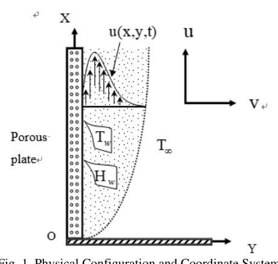

Numerical Solution of Unsteady Viscous Compressible Fluid Flow along a Porous Plate with Induced Magnetic Field
M.M. Islam, M.T. Mollah, M.S. Hasan, M.M. Alam
Modelling, Measurement and Control B 86, 850–863, 2017
Abstract
The unsteady viscous compressible boundary layer fluid flow past a semi-infinite vertical porous plate surrounded in a porous medium with induced magnetic field has been studied numerically. The governing non-linear coupled partial differential equations have been transformed by using usual transformations. The obtained non-linear dimensionless coupled partial differential equations have been solved numerically. The explicit finite difference method is used as solution technique and MATLAB software is used as a secondary tool. The obtained results for the density, velocity, induced magnetic field as well as temperature distributions are shown graphically.
Figures from this paper
{kind=link}

Citation
@article{1_2017_dec_islam_numerical_solution_of_unstea,
title = {Numerical Solution of Unsteady Viscous Compressible Fluid Flow along a Porous Plate with Induced Magnetic Field},
author = {M.M. Islam and M.T. Mollah and M.S. Hasan and M.M. Alam},
journal = {Modelling, Measurement and Control B 86, 850–863},
year = {2017},
doi = {10.18280/mmc_b.860403},
url = {http://www.iieta.org/journals/mmc_b/paper/10.18280/mmc_b.860403}
}